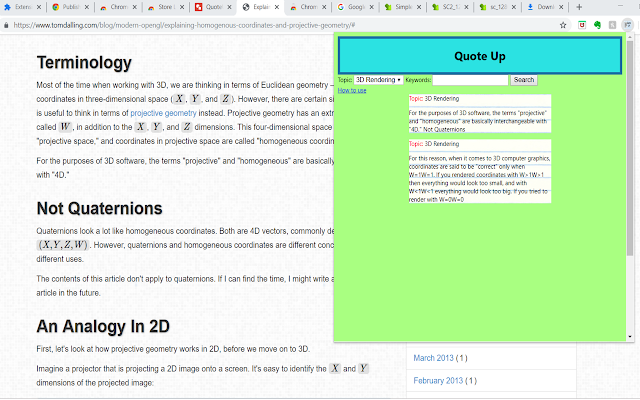

Here Are Some of My Projects
Check them out!
Parrot Note
I got tired of switching tabs between Evernote and Youtube lecture videos. Video learnings are effective, yet it is hard to take notes. After some works I made this website where it can automatically format your note and let you take note while watching lecture videos.
project page

Silent Day
A 3D RTS WW1 game I made with Mr.John and Sire Pepsipu in Unity 3D. Some features include A* pathfinding, group system, build system. And, if you want to be technical (hurray), some programming patterns include Command Pattern, Component Pattern, Interface Pattern, and more!
project page
Website For Mufu's kingdom
Website I made for a friend in html and css. The idea is about a medieval regiment
project page
iExplore Landing Page
This is the landing page I made for iExplore club, a non-profit organization that host webinar and small group lectures on STEM and literatures. For some reason, I am currently the vice president of the club.
project page
Quote Cards
This is made because I'm tired of making index cards for English Research Papers. Quote Cards is a Chrome Extension that allows you to highlight texts on any website and generate a digital index card for your quote. The cards you made will be stored in chrome browser's localStorage space. You can also Search through your deck to find earlier cards.
project page
